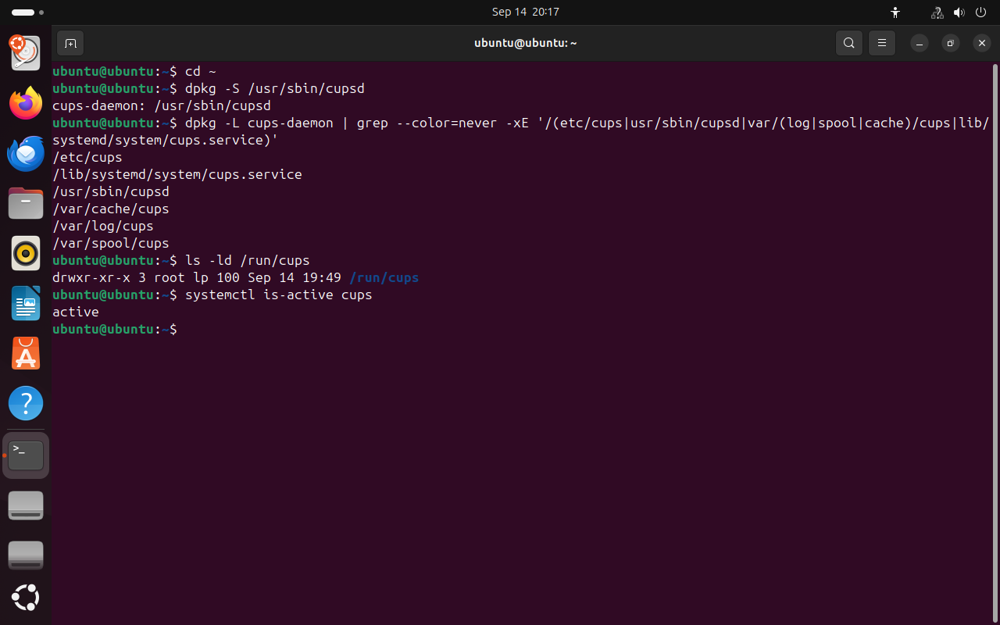

ОП.05 · занятие 3 · практикум на Ubuntu
Разрез
Linux
Как устроено дерево каталогов Linux и почему файлы лежат там, где лежат.
Начать с первого слоя →ubuntu@ubuntu:~$ dpkg -L cups-daemon
/usr/sbin/cupsdпрограмма службы печати/lib/systemd/system/cups.serviceописание службы, пришло с пакетом/etc/cupsнастройки печати/var/spool/cupsзадания, которые ждут печати/var/log/cupsжурналы/var/cache/cupsкэш, программа может создать его заново/run/cupsфайлы работающей службы
Одна служба печати, семь каталогов. Почему не один?
С чего начинается урок
В Windows программа обычно устанавливается в одну папку внутри C:\Program Files. В Ubuntu файлы службы печати CUPS лежат сразу в /usr, /etc, /var и /run. Так сделано по определённому правилу, и в этом уроке мы его разберём.
{kind=link}

Весь кадр ↗Вывод команды dpkg: файлы пакета cups-daemon лежат в разных каталогах.
Главная мысль урока
Главная мысль урока складывается из восьми предложений, по одному на слой. В начале каждой страницы видно, что уже известно, в конце добавляется новое предложение.
- 01Все файлы Linux лежат в одном дереве каталогов, и путь к любому файлу начинается с корня /.
- 02Каталог для файла выбирают по тому, что в нём хранится: программа, настройки или данные.
- 03Программы лежат в /usr, а оболочка находит их по списку каталогов из переменной PATH.
- 04Данные, которые меняются во время работы, раскладывают по сроку хранения: /var, /tmp и /run.
- 05Не каждый путь ведёт к файлу на диске: содержимое /proc, /sys и /dev выдаёт ядро.
- 06Имя файла записано в каталоге и указывает на inode — запись со сведениями о файле.
- 07Какая файловая система стоит за путём, определяет монтирование.
- 08По этим правилам мы размещаем файлы своего приложения и проверяем результат командами.
Восемь слоёв
Каждый слой отвечает на один вопрос и опирается на предыдущие, поэтому проходите их по порядку.
- 01Адрес
Откуда начинается путь к файлу и как его прочитать?
4 раздела - 02Назначение
По какому правилу файл попадает в тот или иной каталог?
5 разделов - 03Программы
Мы вводим короткое имя команды. Как оболочка находит файл программы?
2 раздела - 04Срок хранения
Почему данные одной программы лежат в разных каталогах: /var, /tmp и /run?
3 раздела - 05Ядро
Всегда ли за путём стоит файл, записанный на диск?
3 раздела - 06Имя и inode
Где хранится имя файла и где — сведения о нём?
3 раздела - 07Монтирование
Как узнать, какая файловая система стоит за каталогом?
4 раздела - 08Своё приложение
Куда положить файлы нового сервиса и как проверить, что выбор правильный?
3 раздела
Блоки на страницах
Команды, которые вы выполняете сами. Рядом с каждой написано, что она делает, внизу — что должно получиться.
Снимок экрана Ubuntu. Важные строки увеличены и пронумерованы, пояснения под ними.
Термин в виде страницы справки man: что это, как работает, зачем нужно и с чем не путать.
Вопрос: сначала ответьте сами, потом откройте ответ.
Перед началом
Нужна Ubuntu из практической работы №1 и терминал. Все опыты выполняются в каталоге ~/linux-fhs-lab от имени обычного пользователя. Команда sudo понадобится один раз, в слое 7. На урок отводится две пары по 90 минут, отчёт можно закончить дома.
Снимки сделаны в Ubuntu 24.04.4 Live. У вас будут другие имя пользователя, номера процессов и inode. Это нормально: важно, что означает результат, а не совпадение чисел.
Карта корня
Основные каталоги и слой, в котором разбирается каждый. Цвет плитки совпадает с цветом слоя.
Самый верхний каталог, с него начинается любой путь.
pwdРазбирается в слое 01 · Адрес →Вся карта таблицей
| Путь | Назначение | Проверка | Слой |
|---|---|---|---|
/ | Самый верхний каталог, с него начинается любой путь. | pwd | слой 01 |
/home | Файлы и настройки обычных пользователей. | ls /home | слой 01 |
/root | Домашний каталог root. Не путать с корнем /. | getent passwd root | слой 01 |
/etc | Настройки системы и программ. | cat /etc/os-release | слой 02 |
/boot | Файлы для загрузки системы. | ls /boot | слой 02 |
/usr | Программы, библиотеки и справка. | ls /usr | слой 03 |
/usr/local | Сюда администратор ставит программы сам, без менеджера пакетов. | ls /usr/local | слой 03 |
/opt | Программы, установленные целиком в один каталог. Часто пуст. | ls -la /opt | слой 03 |
/var | Журналы, базы, очереди и кэш. | ls /var | слой 04 |
/tmp | Файлы могут быть удалены в любой момент. | findmnt -T /tmp | слой 04 |
/run | После перезагрузки каталог пуст. | findmnt -T /run | слой 04 |
/dev | Файлы, через которые программы обращаются к устройствам. | ls -l /dev/null | слой 05 |
/proc | Сведения о процессах и памяти, их выдаёт ядро. | cat /proc/uptime | слой 05 |
/sys | Параметры устройств, их выдаёт ядро. | ls /sys/class/net | слой 05 |
/mnt | Место, куда вручную подключают диски. | findmnt -T /mnt | слой 07 |
/media | Сюда подключаются флешки. | ls /media | слой 07 |
/srv | Файлы, которые сервис отдаёт, например сайт. | ls -la /srv | слой 08 |